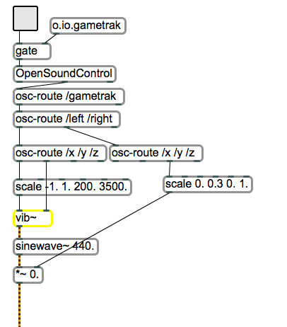
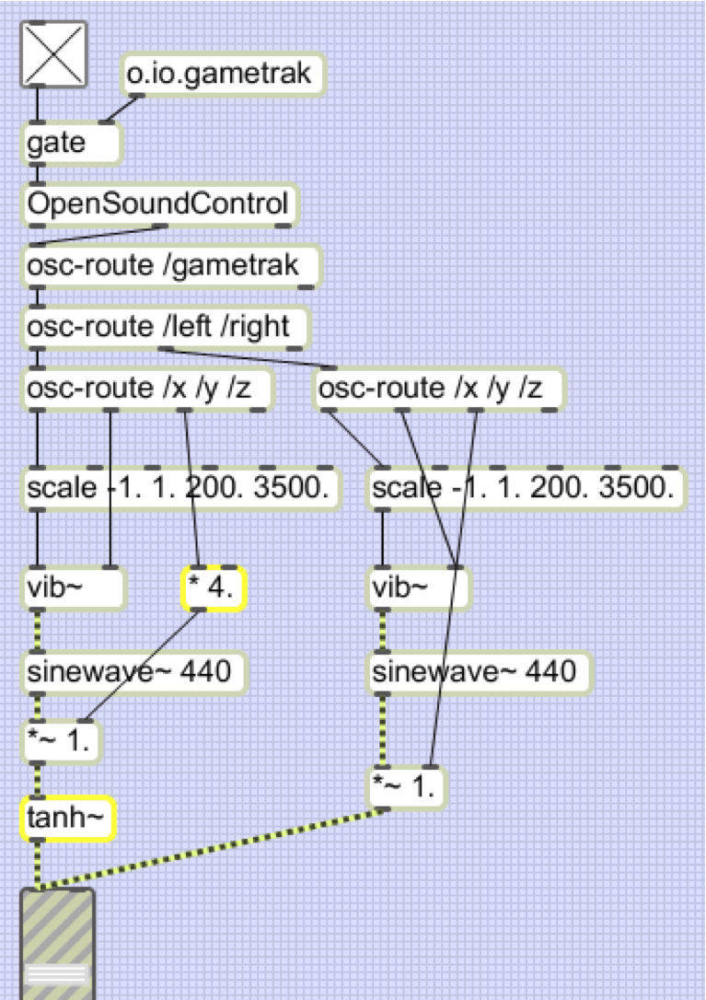
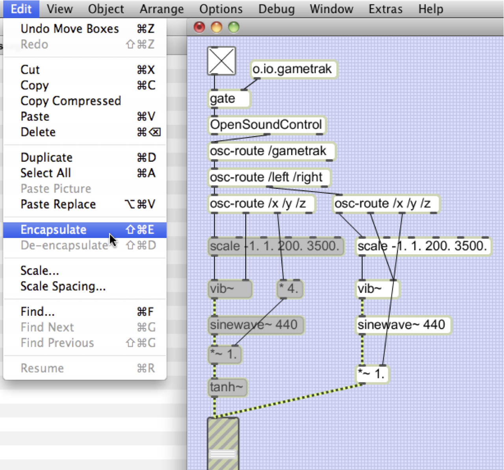
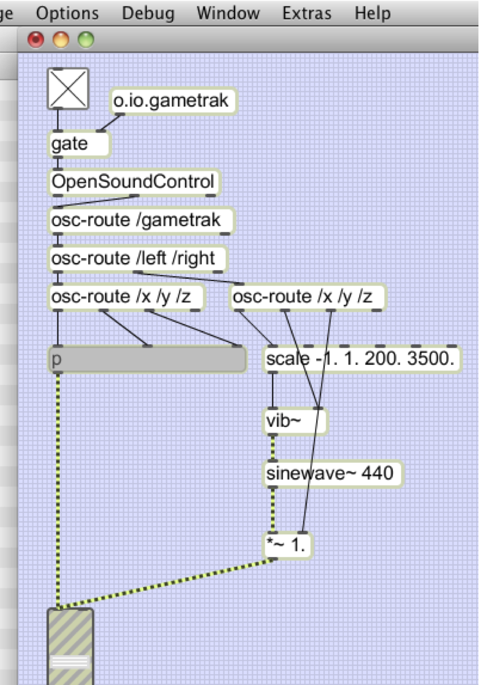
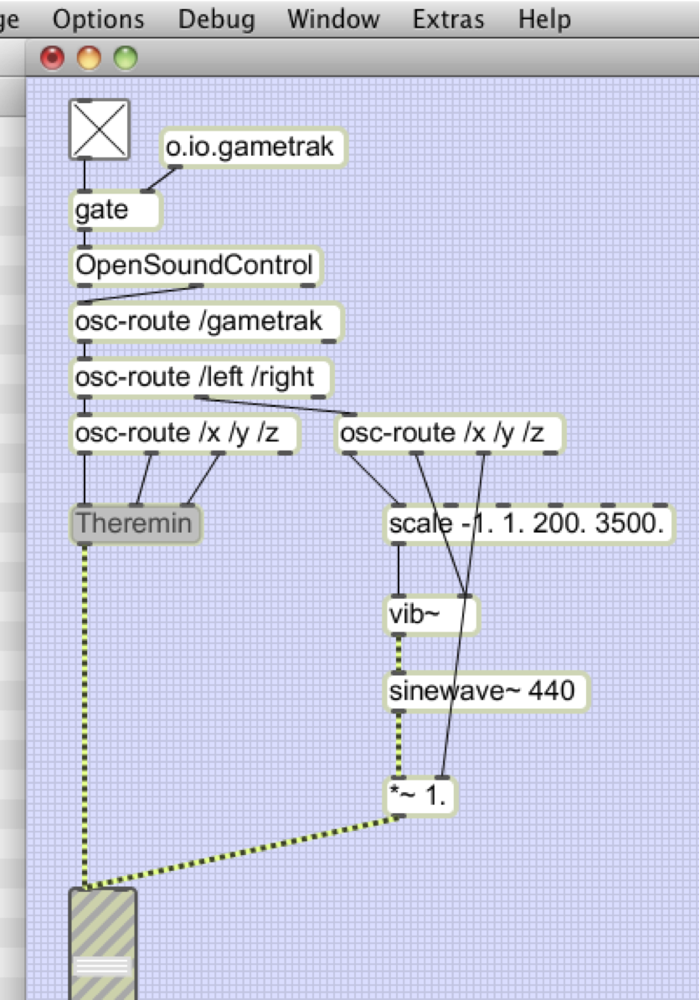
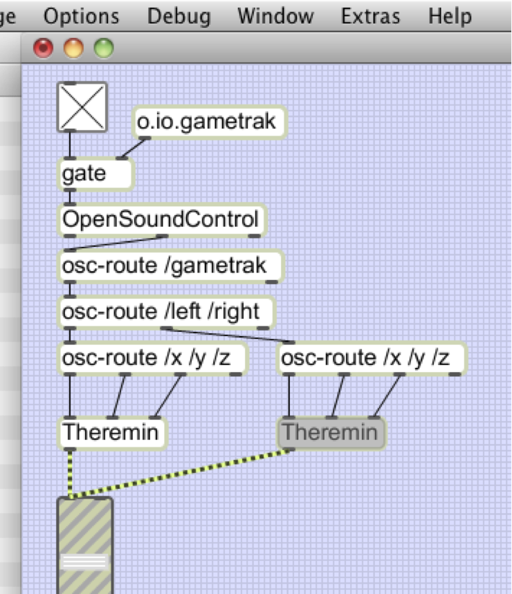
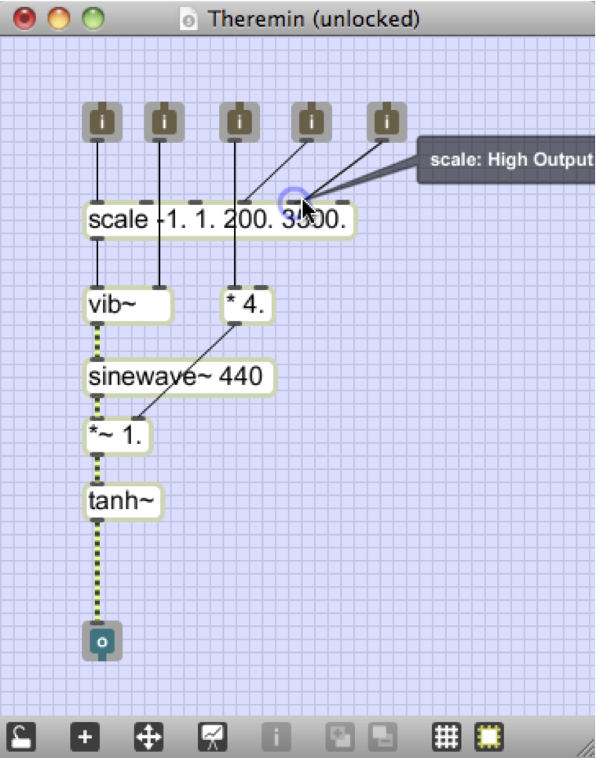
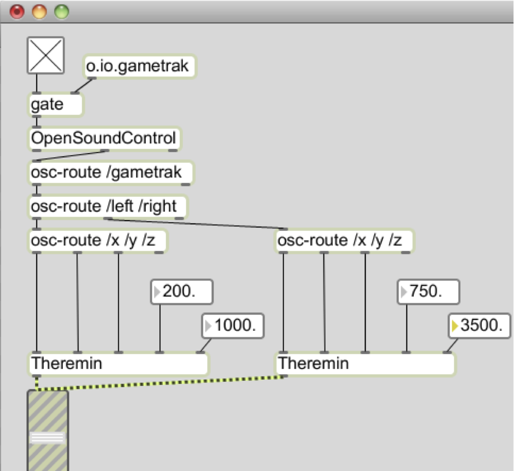

CNMAT Max/MSP Summer Class 2011
Lab Assignment 2
Summary
In this lesson, you will expand on the Theremin you built in lesson 1 by adding vibrato as a parameter
that you can control with the Gametrak, adding a second voice, and adding distortion that increases with
the volume.
Topics
Polyphony, encapsulation, abstraction, reuse, parameters.
Objects Introduced
[patcher ], [tanh~ ] , [times~ ] , [plus~ ]
Relevant Tutorials
Basic
-
1.
- Encapsulation
-
2.
- Abstraction
-
3.
- Presentation Mode
-
4.
- Controlling Data Flow
MSP
-
1.
- Test Tone
-
2.
- Adjustable Oscillator
-
3.
- Wavetable Oscillator
-
4.
- Vibrato and FM
1 Vibrato
Vibrato is an expressive musical device that is created by slowly oscillating the pitch being played
(Theremin virtuoso Clara Rockmore (1911-98) was famous for her beautiful vibrato). Of course, you can
add vibrato by simply shaking the part of the Gametrak that controls the frequency of our Theremin, but
since it takes many years of practice to be able to control smooth, even vibrato, we’ll extend our patch to
do it for us.
The [vib~ ] object takes two parameters (see the help file for a demonstration): (1) the frequency in Hz
around which the output will oscillate (left inlet), and (2) a parameter between 0–1 that controls both the
speed and depth of the oscillation (right inlet).
We’ll wire the [vib~ ] object in between the [scale ] and [sinewave~ ] objects and control the speed and depth of the
oscillation using the Gametrak.
-
1.
- Disconnect the [sinewave ] object from the [gain~ ] object.
-
2.
- Connect the outlet of the [scale ] object to the left inlet of the [vib~ ] object.
-
3.
- Connect the outlet of the [vib~ ] object to the left inlet of the [sinewave~ ] object.
-
4.
- Connect the outlet of the [sinewave~ ] object to the left inlet of the [*~ ] object.
-
5.
- Now connect the /y value of the left [OSC-route /x /y /z] object to the right inlet of the
[vib~ ] object. Even though the controller is sending out values between -1–1, we don’t have to
change anything because the [vib~ ] object takes the absolute value of the parameters that enter
through the right inlet.

2 Polyphony
Now our Theremin has three parameters that we are controlling with the Gametrak, but we’re not making
very efficient use of our controller. In this section, we’ll remap the three parameters of the Theremin
to the left joystick and make a copy of the instrument that we can control with the right
joystick.
-
1.
- Rewire your patch so that the /x, /y, and /z parameters of the left joystick control the
frequency, gain, and vibrato as follows:
|
|
| Gametrak parameter | Theremin parameter |
|
|
|
|
| /x | frequency |
|
|
| /y | vibrato |
|
|
| /z | gain |
|
|
| |
Since we had been controlling the frequency with the /z parameter which has a range of 0–1 and we
will now be controlling the frequency with the /x parameter which has a range of -1–1,
we will need to change the arguments of the [scale ] object so that the first two are
-1–1.
-
2.
- Now make a copy of all of the objects between the bottom [OSC-route /x /y /z] object and the
[gain~ ] object.
-
3.
- Wire up the copy so that the right joystick controls the three parameters of the second voice the
same way that the left one does.
3 Brightness
We can improve our Theremin increasing the brightness of the tone as the volume increases. Increased
brightness occurs when harmonics are added to our sine wave, which we can do by gradually transforming
our nice round sine wave into a square wave. One way to do this is to increase its amplitude and send its
output through a [tanh~ ] object. See the file called brightness.maxpat in the demos folder for a
demonstration of how this works.
-
1.
- Start wiring a [tanh~ ] object between the [*~ ] ( [times~ ] ) object and the [gain~ ] object for the left
voice.
-
2.
- Now we want the /z parameter from the Gametrak that is controlling the volume to have a
greater range so that the signal saturates. Multiply the /z parameter by 4.

4 Abstraction
We would now like to apply the change that we’ve made to the left joystick (part 3 of today’s lab) to the
right joystick. There are at least two ways to implement this change for the second voice that we want to
avoid: (1) we can simply repeat the necessary steps, or we can (2) delete the right side and copy the
objects from the left and rewire them.
While neither of these scenarios may seem like a problem, try to imagine what it would be like if your
patch contained 20 voices each with 20 objects. As we continue to copy and paste groups of objects that
represent some sort of functionality, we quickly run into the need to abstract that functionality in a way
that would allow us to make the change to one part of the patch and have that change propagate through
all instances of that abstraction.
-
1.
- Select the objects in the left part of the patch that represent the Theremin voice (starting
with [scale a]nd including [tanh~ ] ).
-
2.
- Under the “Edit” menu, choose “Encapsulate.”

The objects that you had selected have now been encapsulated in an object called [p ], which
is short for [patcher ]. We call this object a “subpatch” or a “subpatcher.”

-
3.
- Double-click on the [p ] object that was just created. You will see a window that contains all
of the objects that you had selected still wired up in the same way.
-
4.
- Now save a copy of that new patch (by choosing “Save As...” from under the “Edit” menu).
Save it in the directory for today’s lab—the same directory where the main Max patch you
are editing is. You can call it anything you like (maybe Theremin.maxpat would be a good
choice...).
-
5.
- Now close the subpatch window and, back in the main patch, replace the [p] object with the
name of the patch you just saved, omitting the .maxpat extension. So, if you saved your patch
with the title Theremin.maxpat, you should make an object called [Theremin ].

There is no need to rewire your patch—since the subpatch and the abstraction you just made
have the same number of inlets and outlets, Max will simply replace the subpatch with your
[Theremin ] abstraction, keeping the connections in tact.
-
6.
- Now, make a copy of the [Theremin ] abstraction in the patch and replace the objects that
constitute the second voice with the [Theremin ].

5 Parameters
The abstraction you made in part 4 allows you to make a change to the file you saved on disk
(Theremin.maxpat) and to have that change take effect wherever it is used. Try it:
-
1.
- Open the file Theremin.maxpat on your hard drive and make a change to the parameters of
the [scale ] object.
-
2.
- Now, go back to the main patch and double click on both instances of the [Theremin ]
abstraction—you should see the changes you made.
But what if we want to change the parameters of the [scale ] object in the left instance of
the [Theremin t]o [scale -1. 1. 200. 1000.] and those of the right instance to [scale -1. 1.
750. 3500.] so that we have a low and a high instrument? For this, we need to expose these
parameters so they can be accessed from the patch that contains the instances.
-
3.
- Open the Theremin.maxpat patch on the hard disk and add two inlets—you can do this by
creating a new object and typing “inlet” into it, or by selecting, copying and pasting two of
the inlets that already exist in the patch.
-
4.
- Now connect the left inlet you made to the fourth inlet of the [scale ] object so that numbers
coming in through that inlet control the output minimum value, and connect the right inlet
you made to the fifth inlet of the [scale ] object.

-
5.
- Save and close Theremin.maxpat. Notice that the two instances of the abstraction in the main
patch have been updated with two new inlets.
-
6.
- Now we can control the minimum and maximum frequencies that the Gametrak’s joysticks are
mapped to. Connect number boxes to the new inlets of [Theremin ] and set the frequencies
to 200 and 1000 for the left and 750 and 3500 for the right.
